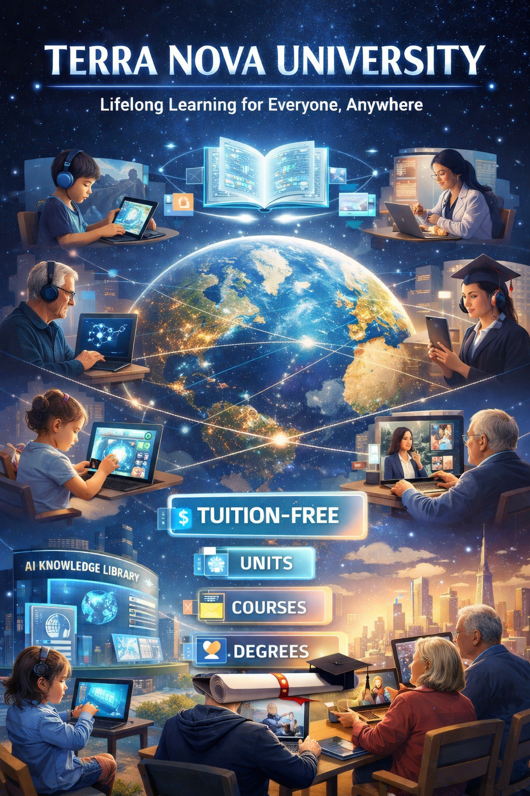

Terra Nova University: Lifelong Learning for Everyone, Anywhere

Concept proposal: Terra Nova University is a proposed institution, not an operating or accredited university. The degree and accreditation features described below are goals of the proposal.
Terra Nova University (TNU) is a fictional tuition-free, fully online, non-profit university designed to provide globally recognized education to anyone, from age 1 to 150. Its mission is to create a permanent, organized repository of human knowledge, accessible to all, while supporting a system of achievement and mastery that encourages lifelong curiosity and formal recognition. At TNU, education is a journey of exploration, discovery, and accomplishment, not bound by age, location, or prior experience.
Academic Structure: Units, Courses, and Degrees
TNU organizes learning in a flexible, achievement-driven modular system that balances open exploration, high standards, and rigorous recognition:
Units
• Units are the smallest building blocks of learning, covering specific topics or skills.
• Prepared by TNU teams to the highest standards of excellence, units include videos, readings, interactive simulations, and multimedia exercises, with multilingual support built into the platform at every level.
• Any learner can explore any unit at any time—there are no prerequisites ever.
• Optional Testing for Achievement: Units contain rigorous assessments, but testing is entirely optional for learners motivated by curiosity rather than formal recognition. Passing a unit earns credits, badges, or milestones toward courses or degrees.
• Units are fully AI-linked to the TNU Knowledge Library, which provides instant access to related research, simulations, and reference materials, prompting learners with “Would you like to know more?”
Courses
• Courses are collections of related units forming coherent subject areas.
• Learners can explore courses freely for curiosity, or complete them for recognition.
• To earn credit, all required units within a course must be successfully completed.
• Completing a course grants certificates, badges, and achievement milestones.
• Courses also enable interdisciplinary learning, allowing learners to combine units across subjects for broader mastery.
• Multilingual support is fully integrated, ensuring learners worldwide can engage in their preferred language.
Degrees
• Degrees are structured programs composed of required and elective courses.
• Learners can choose electives from multiple options, customizing their educational path according to interests or career goals.
• To earn a degree, all required courses and chosen electives must be successfully completed.
• Degrees are fully accredited and carry full academic credibility, comparable to any traditional or online university.
• Learners can pursue multiple degrees sequentially or concurrently, building a lifelong portfolio of achievements.
• Degree programs are accessible in multiple languages, maintaining rigor and inclusivity for all learners.
Learning Philosophy: Curiosity and Achievement
• TNU emphasizes learning driven by curiosity, allowing learners to explore any topic without pressure.
• Recognition—credits, milestones, badges, and degrees—is optional and only requires successful completion of assessments.
• Education is treated like a game of achievements, motivating learners to progress while providing tangible proof of mastery.
• The system supports learners of all ages, from toddlers exploring units for fun to retirees pursuing multiple degrees.
TNU Platform Architecture and Technical Details
The TNU platform is designed to support millions of learners simultaneously, provide seamless access to content in multiple languages, and integrate AI-driven personalized learning and research tools. Its architecture balances scalability, security, reliability, and adaptability.
Key Components:
• Cloud-Based Learning Management System (LMS)
• Fully online, 24/7 access on any device (desktop, tablet, mobile).
• Hosts all units, courses, multimedia, assessments, and AI tools.
• Supports multilingual content delivery at all levels, including interface, subtitles, and AI guidance.
• AI-Linked Knowledge Library
• Centralized, AI-powered research library that aggregates existing internet knowledge repositories, including academic publications, open-access journals, educational databases, and publicly available multimedia.
• Provides contextual recommendations, research assistance, simulations, and prompts like “Would you like to know more?”
• Learners can query the library, explore related content, and receive adaptive guidance tailored to their progress.
• By leveraging existing knowledge, TNU avoids reinventing the wheel and provides a comprehensive, curated, and constantly updated learning environment.
• Achievement and Credential Engine
• Tracks units, courses, and degrees completed by each learner.
• Assigns badges, milestones, and AI-verified achievements.
• Manages elective selections, optional assessments, and multi-degree tracking for learners of any age.
• Collaboration and Community Layer
• Supports forums, virtual classrooms, peer-to-peer messaging, and mentorship connections.
• Facilitates regional meetups, project collaboration, and online esports competitions.
• Integrates real-time translation for global multilingual communication.
• Content Management and Delivery
• Units are modular and reusable across courses and degrees.
• Multimedia content is optimized for streaming, interactive simulations, and VR/AR experiences.
• AI-driven indexing ensures fast search, contextual linking, and cross-referencing across the knowledge library.
• Security, Privacy, and Scalability
• Data encrypted in transit and at rest.
• Scalable cloud infrastructure ensures smooth performance even during global peak usage.
• Multi-factor authentication and AI monitoring protect learner accounts and platform integrity.
• Analytics and Adaptive Learning
• Real-time learner analytics provide insights into engagement, progress, and achievement.
• AI adapts content suggestions and learning paths based on performance, curiosity, and goals.
• Supports instructors and advisors in mentoring and tracking learner outcomes.
Integration Across the Ecosystem
• The platform seamlessly integrates units → courses → degrees → achievements → library → meetups → competitions, creating a cohesive learner experience.
• Multilingual AI ensures global accessibility, making every learner’s journey personalized, interactive, and inclusive.
• By leveraging existing internet knowledge repositories, the library provides a comprehensive, curated, and continuously updated foundation for all learning activities.
Global Community and Meetups
• TNU fosters social engagement through virtual collaboration and local meetups.
• Learners in the same city or region can organize events, workshops, study groups, competitions, and community projects.
• Faculty and advisors may participate in meetups to provide mentorship, host workshops, or review projects.
• Meetups strengthen peer-to-peer networking, collaboration, and community identity, bridging the gap between online and in-person learning.
• All meetups and online collaboration tools are multilingual-enabled, ensuring inclusivity across global learners.
Esports and Online Competitions
• TNU replaces traditional sports with online gaming competitions, creating a globally accessible, inclusive, and achievement-driven form of play.
• Multiplayer and team-based games develop strategy, leadership, communication, and collaboration skills.
• Competitions can be casual, competitive, or professional-level tournaments, with rankings and badges integrated into learners’ portfolios.
• Optional local hubs or meetups allow learners to participate in live gaming events, combining social engagement with competitive play.
• All competitions support multilingual communication, making global teamwork seamless.
Lifelong Learning for All Ages
• TNU is designed for learners from 1 to 150 years old, with no age restrictions for units, courses, or degrees.
• Early learners can explore foundational units or achieve elementary/middle/high school milestones.
• Adult learners, professionals, and retirees can pursue advanced courses or multiple degrees.
• The platform supports continuous learning, ensuring that curiosity, skill development, and formal recognition coexist seamlessly.
Global Accessibility and Equity
• TNU provides tuition-free education, making high-quality learning accessible regardless of socioeconomic status.
• Courses are fully online, multilingual, and cross-device compatible, enabling global participation.
• By offering achievement milestones, certificates, and accredited degrees, TNU reduces educational inequality and promotes global workforce readiness.
Sustainability and Funding
• TNU operates as a non-profit, funded through:
• Government grants supporting universal access to education.
• Philanthropic donations and endowments from individuals, foundations, and corporations.
• Partnerships with universities, research institutes, and NGOs for collaborative research and innovation.
• Optional licensing of educational content or tools to partner institutions for sustainability.
Addressing Traditional University Limitations
While TNU cannot fully replicate all aspects of physical campuses, it mitigates limitations through:
• Virtual labs, VR/AR simulations, and remote lab kits for hands-on experience.
• Global meetups, workshops, and project collaborations to create social immersion.
• AI-linked libraries and virtual makerspaces to replace physical resources.
• Esports and competitions to provide social and collaborative engagement.
• Hybrid partnerships for programs that require in-person certification.
• Multilingual support ensures all learners can participate fully, regardless of language barriers.
These solutions ensure that TNU learners gain rigorous, credible, and socially connected learning experiences, often surpassing traditional universities in flexibility, accessibility, and lifelong engagement.
Conclusion
Terra Nova University is a revolutionary model of lifelong education.
• Units, courses, and degrees provide rigorous, achievement-driven learning.
• AI integration creates a permanent, interactive global knowledge library leveraging existing repositories.
• Meetups and esports foster community, collaboration, and social development.
• Learners of all ages can pursue curiosity-driven exploration or fully accredited degrees.
• Multilingual support at every level ensures truly global accessibility.
• TNU combines academic rigor, achievement recognition, and global inclusivity, making it a transformative university for the 21st century.
Learning is no longer limited by age, geography, language, or traditional infrastructure—it is defined by curiosity, achievement, and exploration.